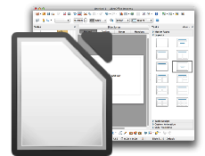
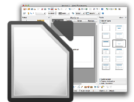
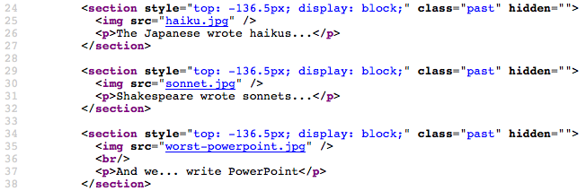
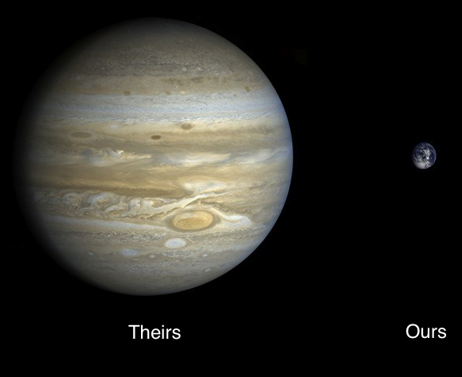

The Japanese wrote haikus...

Shakespeare wrote sonnets...

And we... write PowerPoint

A lot of people blame PowerPoint for bad presentations...

...but that's like blaming fountain pens for bad poetry.
 

The real problem with tools like PowerPoint...

...is that they aren't web-friendly.


When you export a slideshow to present on the web...

...what you actually get is a bunch of images.
There's no text, just pixels arranged in the shapes of letters.

There's no text, just pixels arranged in the shapes of letters.
No hyperlinks.
There's no text, just pixels arranged in the shapes of letters.
No hyperlinks.
Nothing search engines or disability aids can read.
There's no text, just pixels arranged in the shapes of letters.
No hyperlinks.
Nothing search engines or disability aids can read.
And remixing? Forget it.
What's worse, if you want something people can replay
you have to make a screencast...

What's worse, if you want something people can replay
you have to make a screencast...
...which is just as opaque to search engines and disability aids...
What's worse, if you want something people can replay
you have to make a screencast...
...which is just as opaque to search engines and disability aids...
...and probably hundreds of times larger than your original slides.
Browsercast is our solution to this problem.

It replays an HTML5 slideshow in your browser with a voiceover.
The playback controls and slide controls are synchronized.

And "View Source" and search work as they should...

And "View Source" and search work as they should...
...because it's all still web-native HTML.
Links work as they should too...
Links work as they should too...
What's more, since it's just text and audio...
...it's a fraction of the size of a regular screencast.

All this makes it ideal for mobile devices.
Browsercast is open source.
Browsercast is open source.
If you'd like to help us make it better,
please fork our repo.
Such browser — so cast — very web.
Thanks for listening.
Narrated by Madeleine Wilson
With thanks to David Seifried, Jeremy Banks, and David Wolever for work on earlier prototypes.